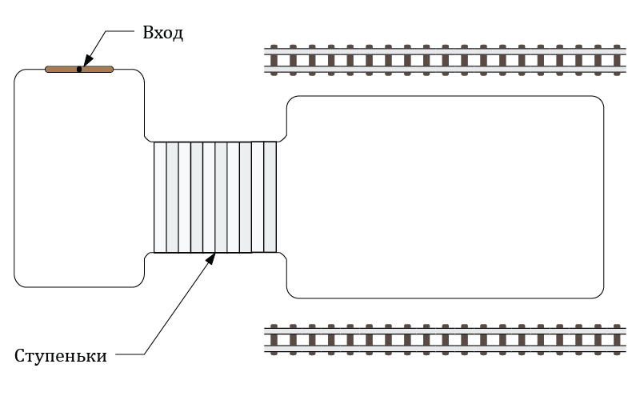

Алексей Кравецкий
Теория самодезорганизации в картинках
Живые организмы, как известно, самоорганизуются. То есть превращают наш мир, живущий в условиях непрерывного роста энтропии, в локальные субмиры, где энтропия локально падает. То бишь хаос там становится каким-никаким, но порядком. Процесс сей столь занимателен и привлекателен, что его так и хочется обобщить до всего и вся.
Например, рыночные теоретики нам убедительно рассказывают, что все беды от несвободы. Злые силы, дескать, насаждают тоталитаризм и тем самым лишают человечество счастья и процветания. Человечество, сплошь состоящее из индивидов с врождёнными правами человека, кабы не эти злые силы, решительно ломанулось бы по одиночке к личному счастью, а раз так, — утверждают рыночные теоретики, — то неминуемо бы прибежало и к общественному счастью тоже. Ведь это ж очевидно: если каждый хочет как лучше, то дай им полную свободу, и они все вместе сделают очень хорошо.
Конечно, есть среди всех отдельные некоторые, которые хотят как хуже, но вот с ними как раз и должно бороться государство. А тех, которые как лучше, трогать не надо и тогда будет всё отлично.
Есть, правда, небольшой нюанс: большинство хочет, чтобы было как лучше лично им. Следование из этого неминуемого Как Лучше для всех, по меньшей мере не очевидно, а даже примитивные наблюдения показывают, что Как Лучше одного весьма часто противоречит Как Лучше другого. При этом оба, в общем-то, ничего криминального не хотят. Например, хотят всего-то не работать и жить с дивидендов. При этом очевидно, что если все одновременно так сделают, то всем одновременно очень скоро станет Как Лучше как максимум где-то в мире ином.
Рыночные теоретики от такого отмахиваются и говорят, что, де, не надо считать людей подлецами и всё такое. Всё, де, нормализуется, не надо паники. Люди, де, не дураки и отлично понимают, что и как.
Однако, тем не менее, хотелось бы рассмотреть один животрепещущий пример, наглядно демонстрирующий, кто что понимает и к чему это приводит.
Пример этот я неоднократно наблюдал своими глазами прямо внутри ближайшей станции метро. Устроено это так. Есть вход на станцию, рядом с входом, за турникетами небольшой как бы холл, а от него ступеньки ведут вниз, на платформу. Очень простая конфигурация и весьма распространённая.

Когда людей мало, всё прекрасно работает. Одни заходят с улицы — синие от холода, другие высаживаются из вагонов, красные от жары.
Когда ко входу прибывает автобус, входящий поток усиливается. Аналогично бывает с выходящим потоком в момент прибытия поезда. События эти, однако, далеко не всегда происходят одновременно, поэтому, например, входящие могут заметить, что внутрь идёт куча народу, а наружу — почти никого.
Наиболее сообразительные и грамотные пацаны быстро смекают: «если я, как дурак, пойду по левой стороне, то я попаду в толпу и потому спущусь на станцию медленно, а правая сторона, вон, свободная». Сообразительные пацаны ловко обруливают толпу безграмотных и на полной скорости несутся к заветной цели. Это позволяет им выиграть до двадцати секунд! А если за эти двадцать секунд приедет поезд, то счёт пойдёт на минуты!!!

Однако внезапно поезд действительно прибывает. И из него внезапно выходит толпа других пацанов, которые спешат вырваться из подземной жары на уличный холод.
Приехавшие резво бегут к ступеням и сталкиваются на них лоб в лоб с грамотными пацанами. Те начинают подозревать, что их план содержал некоторое количество изъянов, но поздно — отступать некуда, поскольку в спину им дышат другие грамотные пацаны.

Но приехавшим тоже некуда отступать, ибо им в спину дышат не меньше, а, не исключено даже больше. Поэтому они начинают пытаться просочиться по стеночке. Что не так-то просто, ибо входить продолжают и продолжают. Заполоняя весь холл, что, впрочем, не останавливает только что прибывших грамотных пацанов всех обойти. С другой стороны, приезжает ещё один поезд и выгружает следующую порцию жаждущих выйти на улицу.

Среди них, кстати, тоже есть грамотные, и они пытаются оббежать толпу справа. Чем отрезают входящим последний шанс войти.
Фактически, происходящее становится похоже на два клина, вбитых в лестничный проход. Если по умолчанию проход поддерживал три-четыре ряда в обе стороны, причём, с интервалом в ширину вида «размахнись рука, раззудись плечо», то теперь в обе стороны работает в лучшем случае один ряд. Тот самый, где боком вдоль стенки просачиваются на платформу и, — с противоположной стороны, — на выход.
ИИногда, впрочем, даже и не просачиваются. Фактически стоят стенка на стенку. Точнее, клин на клин.
Казалось бы, всё в полном соответствии с теорией: никто никому зла не желал, все желали строго добра (особенно себе). Но всё самодезорганизовалось до полной мамы не горюй. В результате каждый получил вместо выигрыша двадцати секунд проигрыш, измеряемый, не исключено, в часах. И со временем сложившаяся ситуация будет только ухудшаться — ведь с улицы всё ещё заходят, а на поездах всё ещё приезжают.
В этих случаях тоталитарная власть в лице сотрудников станции решительно расставляет чугунивые заборчики — прямо по воображаемой разделительной линии. Чтобы граждане, прямо как скот, — власть ведь их наверняка ни в грош не ставит, — двигались по прямой безо всякой индивидуальной оптимизации. И, о чудо, тоталитарное вмешательство, лишая возможности мастерски сэкономить двадцать секунд, тем не менее, даёт возможность войти и выйти за предсказуемое время.
Конечно, мощным входящим и выходящим потоком можно обрушить и тоталитарную систему тоже, но она по крайней мере не обрушивает сама себя на ровном месте. Выходит, граждане, не желая ничего плохого и даже в личном порядке усердно работая над оптимизацией собственного блага, приводят систему к гораздо худшему состоянию, чем с тоталитарным чугуниевым забором, подавляющим всякую здоровую инициативу. /p>
Тут сразу же вспоминается замечательный анекдот про прапорщика, заявившего студентам: «если вы такие умные, то чего же вы строем не ходите»? В рассмотренном ключе юмор анекдота внезапно становится совершенно непонятным — прапорщик ведь, судя по всему, правильно сказал: «если бы у вас, студенты, было столько мозгов, сколько вы про себя думаете, то вы бы догадались, что строем вы дойдёте быстрее». Мозги по идее дадены не для того, чтобы себе жизнь осложнять, а напротив, чтобы догадаться, как её сделать проще.
Ты, практически как баран, идёшь по отведе́нному тебе туннелю, безо всяких мега-манёвров по оптимизации двадцати секунд. За тебя какой-то чугуниевый забор определил весь маршрут, лишив тебя возможности лично заботиться о своей судьбе на этих бетонных ступеньках. Тоталитаризм запихнул тебя в стадо и направил прямо туда, где ты по рельсам поедешь строго вперёд, в этой железной машине, которой управляешь не ты, со скоростью, которую определил не ты. И никакой свободы!
Правда, есть одно существенное отличие от вышеупомянутых баранов. Ты спустишься к станции за гарантированное время, а потом, за гарантированное время доедешь до пункта назначения, который пунктом назначения выбрал именно ты. Везти тебя будет квалифицированный специалист, который довезёт тебя с минимальной вероятностью каких-либо эксцессов. Если бы ты рванул, например, пешком или даже на автомобиле, то вероятность обломиться была бы куда как выше. Причём, тебе никто не мешает, если ты того желаешь, стать тем самым специалистом, который всех возит.
Более того, пока ты шёл к гарантированному поезду и ехал в нём, ты, в отличие от барана и грамотно оптимизирующего личные двадцать секунд пацана, мог бы решать ещё нерешённую задачу, сочинять стихи или думать о вечном. Именно в этом свобода. Не в том, чтобы максимально хаотично перемещаться. Не в том, чтобы с утра до ночи думать, как урвать лишние двадцать секунд и тридцать рублей. Полностью свободная беготня по полю не сделает тебя менее бараном, чем движение по туннелю. Свобода вот в этом: в решениях, сочинениях и размышлениях. На по-тоталитарному прямом, удобном, гарантированном пути, — ибо пролегает он в той области, где все задачи уже решены, — но в движении к решению нерешённого, сочинению несочинённого и продумыванию непробдуманного.
Гарантии, организация и упорядочивание освобождают тебе время на размышления. Ты добираешься быстрее, а во время самого процесса гораздо менее загружен. Тем самым тебе дано время думать. Если бы тебя хотели превратить в барана, то это время бы у тебя отняли, заставив лично решать заново все мильон раз решённые вопросы и самостоятельно выпутываться из вышеупомянутых клиньев.
ППоработить граждан хочет не то государство, которое решает за них стандартные вопросы, а то, которое пропагандирует среди граждан самостоятельное всех вопросов решение. Ибо думать такие граждане будут только о самом примитивном — на другое же у них не останется времени.
31/07/2011